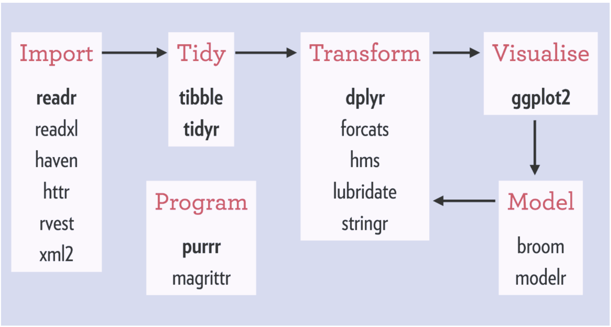

R_Dplyr_minicourse
陳柏銘PoMingChen
2018-10-20
Chapter 1 課程規劃
第一部分
前言
Dplyr是R語言當中相當重要的資料處理與轉換(Data Transformation)套件，同時也是跨出探索式資料分析的第一步。
探索式資料分析是透過視覺化或敘述統計的方式，去觀察資料本身的特性或者變數與變數之間的關聯，以求對資料有更多的認識，看看是否有意外有趣的發現或者不符合常理的地方。當然也包含資料清理與建立新變數特徵 (features) 等部分，必要時需透過爬蟲或者引入第三方資料，才算完整。
資料處理做得好，整體的分析方向和後面的統計建模才會有意義且往對的道路前進，以避免不必要的時間、資源浪費。
課前要求
- 安裝：R
- 安裝：R Studio Desktop
- 下載dplyr cheatsheet
- 註冊Github
- 用Github帳戶登入右下角gitter open chat聊天室
課程大綱
本課程將逐步介紹Dplyr裡常見的函數，主要會透過R語言內建的nycflights13，以及mtcars資料集做教學與課堂上練習。自主練習部分則是利用美國職籃NBA2017~2018球季的球員統計資料做簡單的資料探索。
課堂範例mtcars與自主練習NBA1718皆無提供程式碼答案，前者請於課堂上透過gitter open chat貼上寫好的程式碼，也藉此了解大家的學習狀況。後者可以有空時玩一玩，貼在gitter，歡迎大家一起討論成長。
join (合併報表) 是Dplyr中相當重要的一環，但因初期使用時機不多，所以有興趣可以自行參考cheatsheet。取代地，補充了tidyr套件裡面常用的gather/spread，用來轉換資料行列排版的函數。
以下為講解內容順序：
- 認識資料基本資訊
?、head、str、rename
- 計算敘述統計量
summarise
- 挑選適當的欄位
select
- 篩選適當觀察值
filter
- 從既有變數產生新變數
mutate
- 排序觀察值
arrange
- 分群分析
group_by
- 其他
gather/spread